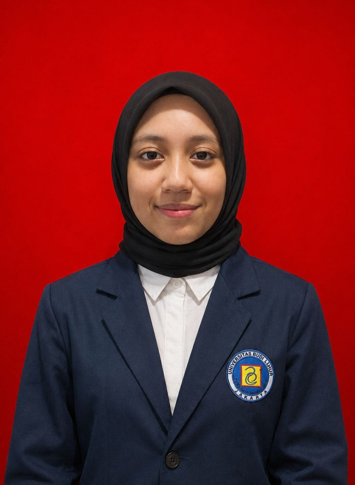

Queena Kaila Alyndra
Dasar-dasar Teknologi Informasi dan Komputer
Teknologi informasi merupakan teknologi yang digunakan untuk mengolah, menyimpan, dan menyampaikan data menjadi informasi. Komputer bekerja dengan menerima input, memproses data, menghasilkan output, dan menyimpan data untuk digunakan kembali. Perangkat komputer yang umum digunakan antara lain laptop, tablet, desktop, server, smartphone, kamera digital, perangkat wearable, dan perangkat game.
Data adalah kumpulan fakta yang belum diproses, sedangkan informasi merupakan data yang sudah memiliki makna. Dalam proses komputer terdapat perangkat input seperti keyboard, mouse, voice input, video input, dan scanner. Hasil pemrosesan dapat ditampilkan melalui perangkat output seperti monitor, printer, dan speaker. Data juga dapat disimpan menggunakan hard disk, SSD, flash drive, memory card, optical disc, maupun cloud storage.
Internet merupakan jaringan komputer yang menghubungkan berbagai perangkat dan pengguna di seluruh dunia. Sementara itu, Web merupakan kumpulan informasi berupa halaman web yang dapat diakses melalui Internet. Browser digunakan untuk membuka halaman web, sedangkan search engine digunakan untuk mencari informasi seperti website, gambar, video, berita, dan lainnya.
Komputer dan perangkat juga dapat saling terhubung melalui jaringan. Komunikasi dapat dilakukan menggunakan teknologi kabel maupun nirkabel seperti Wi-Fi, Bluetooth, dan cellular radio. Jaringan memungkinkan pengguna berbagi koneksi Internet, perangkat, data, informasi, dan software.
Penggunaan teknologi juga memiliki berbagai risiko keamanan dan privasi, seperti virus, malware, spyware, pencurian informasi, dan penyalahgunaan data. Karena itu, pengguna perlu menjaga keamanan perangkat, melindungi informasi pribadi, serta melakukan verifikasi terhadap informasi yang ditemukan di Internet. Materi juga menekankan pentingnya green computing, yaitu penggunaan teknologi dengan mengurangi konsumsi energi dan limbah elektronik.
Selain itu, penggunaan komputer perlu memperhatikan kesehatan dan kenyamanan pengguna. Penggunaan teknologi yang tidak tepat dapat berkaitan dengan masalah seperti repetitive strain injury dan computer vision syndrome. Ergonomi diperlukan agar penggunaan perangkat lebih nyaman, efisien, dan aman.
Kesimpulannya, teknologi informasi mencakup komputer, perangkat digital, data dan informasi, software, Internet, jaringan, serta keamanan digital. Pemahaman dasar mengenai teknologi diperlukan agar kita dapat menggunakan perangkat dan layanan digital secara efektif, aman, dan bertanggung jawab.
Internet dan Dasar-Dasar Pengembangan Web
Internet merupakan jaringan global yang menghubungkan berbagai bisnis, instansi pemerintah, institusi pendidikan, dan individu. Internet pada awalnya berkembang dari ARPANET pada tahun 1969 untuk memungkinkan para ilmuwan berbagi informasi dan bekerja sama. Untuk terhubung ke Internet, perangkat dapat menggunakan koneksi kabel maupun nirkabel.
World Wide Web (WWW) merupakan kumpulan dokumen elektronik yang disebut halaman web. Beberapa halaman yang saling berkaitan membentuk sebuah website, sedangkan web server bertugas mengirimkan halaman web kepada pengguna. Browser digunakan untuk mengakses website, sementara search engine membantu menemukan informasi berdasarkan kata atau topik tertentu. Website juga memiliki berbagai jenis dan dapat menyediakan berbagai media seperti teks, grafik, animasi, audio, video, dan virtual reality.
Internet menyediakan berbagai layanan komunikasi dan pertukaran data, seperti email, mailing list, instant messaging, chat, online discussion, VoIP, dan FTP. Email digunakan untuk mengirim dan menerima pesan atau file, sedangkan FTP digunakan untuk mengunggah dan mengunduh file melalui Internet. Dalam menggunakan Internet juga diperlukan netiquette, yaitu aturan atau etika dalam berkomunikasi dan beraktivitas secara online.
Dalam pengembangan website, terdapat beberapa teknologi utama. HTML digunakan untuk menyusun dan memberikan struktur pada isi halaman web, CSS digunakan untuk mengatur tampilan seperti font, warna, layout, dan posisi elemen, sedangkan JavaScript digunakan untuk membuat program atau konten yang dapat dijalankan oleh browser. Website juga dapat dibuat dengan bantuan text editor, code editor, atau Content Management System (CMS).
HTML menggunakan tags untuk menentukan struktur dan elemen pada halaman web. Dengan HTML, pengembang dapat menambahkan judul, heading, paragraf, gambar, link, daftar, dan video. Salah satu halaman penting dalam sebuah website adalah index.html, yang berperan sebagai halaman utama. Link atau hyperlink memungkinkan pengguna berpindah ke halaman lain, membuka file, atau menjalankan tindakan tertentu.
CSS dapat digunakan untuk mengatur tampilan website agar lebih menarik dan sesuai dengan kebutuhan. Sementara itu, JavaScript memungkinkan halaman web memiliki fungsi yang lebih dinamis, misalnya menampilkan tanggal dan waktu. Website juga dapat menggunakan relative reference dan absolute reference untuk menentukan lokasi file atau tujuan link.
Setelah website selesai dibuat, halaman dapat diuji melalui browser untuk memastikan semua elemen dan link berfungsi dengan benar. Website kemudian dapat dipublikasikan ke web server menggunakan FTP, dengan mengunggah file seperti index.html, halaman lainnya, dan folder gambar ke server. Setelah dipublikasikan, website dapat diakses menggunakan alamat web yang diberikan oleh server.
Kesimpulannya, Internet dan Web memberikan berbagai kemudahan dalam mengakses informasi, berkomunikasi, dan berbagi data. Pemahaman tentang cara kerja website serta penggunaan HTML, CSS, dan JavaScript menjadi dasar dalam membuat halaman web yang terstruktur, menarik, dan interaktif. Dengan memahami dasar-dasar tersebut, seseorang dapat membuat, mengembangkan, menguji, hingga mempublikasikan website agar dapat diakses oleh pengguna melalui Internet.